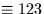

Form a rotation matrix from the Euler angles - three
successive rotations about specified Cartesian axes
(single precision).
CALL:
CALL sla_EULER (ORDER, PHI, THETA, PSI, RMAT)
GIVEN:
ORDER
C*(*)
specifies about which axes the rotations occur
PHI
R
1st rotation (radians)
THETA
R
2nd rotation (radians)
PSI
R
3rd rotation (radians)
RETURNED:
RMAT
R(3,3)
rotation matrix
NOTES:
1.
A rotation is positive when the reference frame rotates
anticlockwise as seen looking towards the origin from the
positive region of the specified axis.
2.
The characters of ORDER define which axes the three successive
rotations are about. A typical value is `ZXZ', indicating that
RMAT is to become the direction cosine matrix corresponding to
rotations of the reference frame through PHI radians about the
old z-axis, followed by THETA radians about the resulting
x-axis,
then PSI radians about the resulting z-axis. In detail:
The axis names can be any of the following, in any order or
combination: X, Y, Z, uppercase or lowercase, 1, 2, 3. Normal
axis labelling/numbering conventions apply;
the xyz () triad is right-handed. Thus, the `ZXZ' example given above
could be written `zxz' or `313' (or even `ZxZ' or `3xZ').
ORDER is terminated by length or by the first unrecognized
character.
Fewer than three rotations are acceptable, in which case
the later angle arguments are ignored.